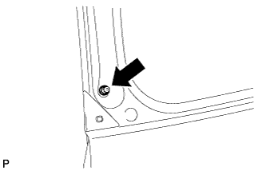

BACK WINDOW STAY > REMOVAL |
| 1. REMOVE BACK WINDOW STAY ASSEMBLY LH |
 |
Using a screwdriver, remove the 2 stop rings as shown in the illustration, and then remove the back window stay.
| *1 | Protective Tape |
| 2. REMOVE BACK DOOR STAY BOLT |
|  |
Remove the back door stay bolt.